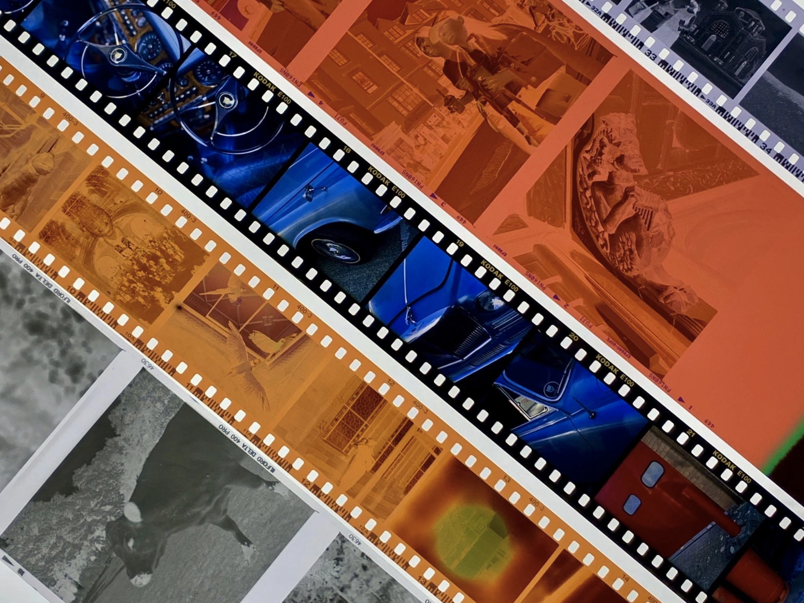
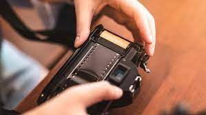
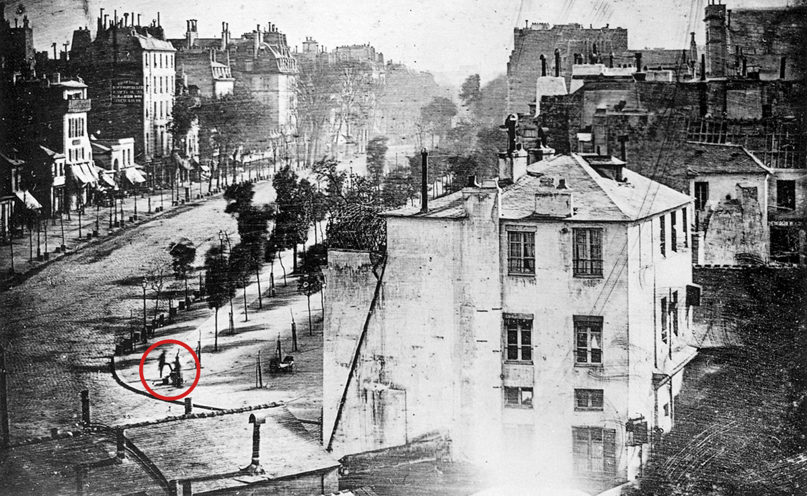

¿Que es la fotografia analogica?



Mucho antes de los celulares con camara, las selfies y el formato JPG, hubo una epoca en la que las fotos no se veian al momento de ser sacadas. Las camaras en el siglo 20, no guardaban las fotos en una memoria digital, sino que la luz directamente las imprimia sobre un papel: el rollo fotografico.
¿Cuando nacio la fotografia?
La fotografia como hoy la conocemos nacio en Francia alrededor de 1830. Joseph Nicéphore Niépce utilizó una cámara oscura portátil para exponer a la luz una placa de peltre recubierta de betún. Esta es la primera imagen grabada que no se desvaneció rápidamente.
Este exito inspiro a Louis Dageuerre para la creacion del daguerrotipo, un prototipo de la fotografia moderna.
